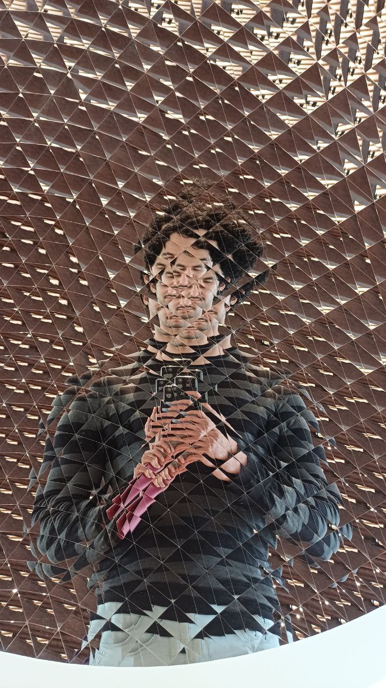

Andrés E. Rentería-Olivo
PhD Candidate in Theoretical Particle PhysicsI am a Ph.D. researcher at the Instituto de Física Corpuscular (IFIC). My research involves precision calculations for scattering amplitudes, quantum computing, and machine learning applied to theoretical particle physics.
My work includes developing advanced techniques like Loop-Tree Duality (LTD) and exploring quantum algorithms for Feynman integrals. Additionally, I am investigating the integration of machine learning models to enhance the accuracy and efficiency of theoretical predictions.
Please feel free to get in touch!
Recent Publications
- Title of Your Paper - Journal Name, Year
- Title of Another Paper - Journal Name, Year